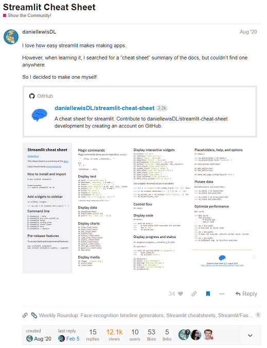

Streamlit
November 2021
If you have tried making web apps in python, you will know that it is a bit of a faff. Sure, there are options: django, flask, web2py and other frameworks have all attempted to make it easier. However, if you are like me, you will have found these options wanting. In late 2019, a far easier option was released: Streamlit.
What is Streamlit?
Streamlit is an awesome open-source python library that makes producing and sharing web apps easy. Its principal mission is to make sharing machine learning and data science projects easy.
And in my view, they nailed it.
$ pip install streamlit
Why did they create Streamlit?
The use case will be familiar to anyone who is not a full-stack developer who has created a machine learning model, data profiling pipeline, or even just some nice visualisations in a python script or jupyter notebook, and then wants to share it with others.
Often, ML engineers, data scientists, or the ever-increasing ranks of non-specialists like me who are learning these techniques, will want to share the output of their work. This could be to demonstrate the effectiveness of a model, or to get early feedback on the direction of a project, or simply to share the ideas and work.
But sharing models is not easy. Often, the code will have been scrubbed together in a jupyter notebook or a series of python scripts, which can be difficult to follow, and emailing notebooks and source files and explaining how to install python and structure the project folder just right is always going to cause headaches.
While there are some alternatives, such as creating a simple GUI with tkinter and then creating an executable of that with PyInstaller, the easiest way to share is usually a web app, where the code can be running on a server, and all the user has to do is point a web browser at the right address. This also makes updating the app and adding features super easy. But producing great-looking and easy to use web apps is a real skill which can take many years to develop. And data nerds are often not front-end devs.
Now, if you really want to build high-quality, scalable, feature rich and secure web apps, python is probably not the best language to use (although it can be and has been done well by many). But this use case is to spin something up in minutes to demo, which is not straightforward in node.js or other frameworks.
The Streamlit founders realised that machine learning engineers and data scientists at many tech companies were spending far too long sketching code to produce a wonky front-end and not enough time in their core area of expertise.
Their insight was to create a tool to abstract away almost all the front-end work, so that data scientists could optimise their time on their core tasks, and then, when needed, use Streamlit to produce beautiful, simple apps, to show off their latest autoencoder or GBM.
In 2021, Streamlit went further and opened up Streamlit Cloud, which makes deploying web apps built with Streamlit to the cloud, so that anyone with an internet connection can view the app. It just takes one click. Even Heroku, which in my view is pretty easy to use as a web app deployment cloud provider, can't get anywhere near the simplicity of the Streamlit approach.
Source: streamlit.io
An amazingly helpful and inclusive online community
One of the reasons Streamlit has gathered so much momentum (and VC funding) since its launch is a thriving community, who jump at the chance to help others and celebrate their work, or offer tips and tricks or hacks to provide additional useful functionality. I've rarely seen so collaborative and enthusiastic a group of users, and they have propelled feature requests and issue resolution making the tool accelerate its development.
Other uses
Streamlit is so easy to use, and creates simple and beautiful web apps in seconds, I would strongly recommend any python user install and experiment with it. Although its genesis was to help share data apps, I have found it so useful that if I want to explore a python library's functionality, often I'll spin up a small streamlit app. It takes seconds, and the interactive nature of what you can produce makes everything easier.
Happy streamlitting!
Useful links
- Streamlit official website
- Tyler Richards' excellent book: Getting Started with Streamlit for Data Science
- The Data Professor's Streamlit YouTube Tutorial Series
- Peter Baumgartner's Streamlitopedia
What is the Cheat Sheet?
I first discovered Streamlit when it was announced in October 2019, when I was doing some machine learning projects at work. But I didn't really start using it until mid-2020, after the pandemic hit. I had been asked to do some data analysis and visualisations for work, and started off using a (half-)pipeline in a jupyter notebook to read a bunch of data, visualise with matplotlib, and save down a few hundred multi-page pdfs to distribute to the team I was working with.
I had that feeling where I thought 'there must be an easier way' and I thought about creating and then sharing a web app with my colleagues so they could explore the data further. However, my Flask-foo was poor at the time, and I knew it would take too long. Then I remembered Streamlit.
I went to streamlit.io, pip installed away, and tried the first tutorial. It was simple, powerful and was exactly what I needed for my project. I also found the nascent but amazingly helpful online community.
As I was using Streamlit, I searched through the docs for the various functionality, and I thought someone must have made a cheat sheet, like the plethora of famous ones for python data science.
But search as I might, I could not find a Streamlit Cheat Sheet. So I thought, well I'll just write down all the commands and then use that. After I did that, I realised I'd created what I wanted, and that it might be useful to others. I stuck it in a powerpoint slide and applied the streamlit design language.
I then had a neat idea - what if I could put the cheat sheet inside a streamlit app? Streamlit was so easy to use that it was pretty simple to do.

Source: discuss.streamlit.io
Hundreds of thousands of views
After I shared it with the community, I was surprised how many people liked my cheat sheet. I got friendly comments from many users as well as the founders of the company, and was invited to the private beta of Streamlit Cloud.
Source: GitHub star history
I deployed the app.py version of the Cheat Sheet to both Streamlit Cloud and to Heroku, and collectively have had hundreds of thousands of visitors, which is really gratifying as I hope I have helped the community build better and faster. In addition, it was my first (and only) GitHub repo to get over 150 stars.